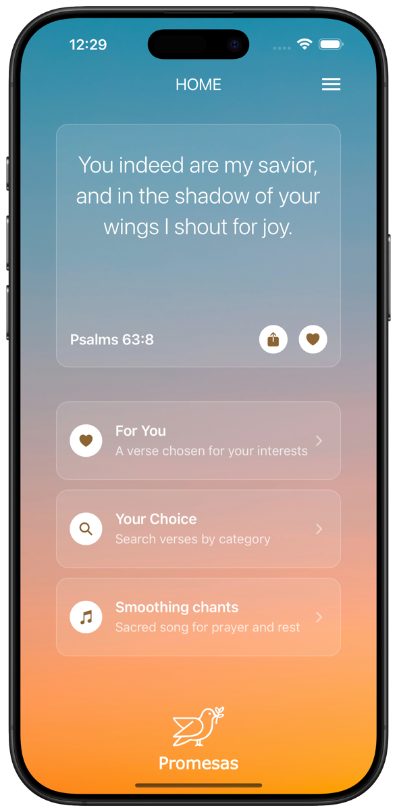
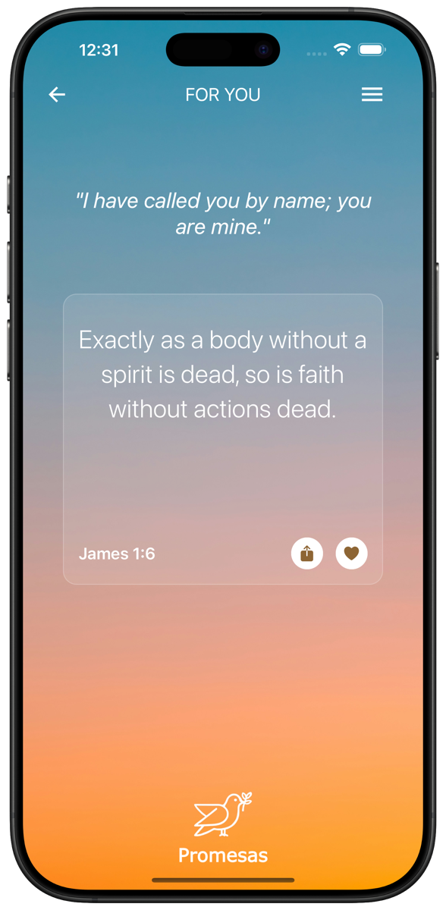
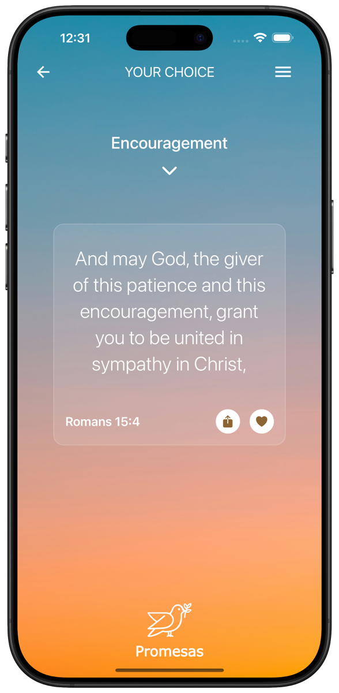
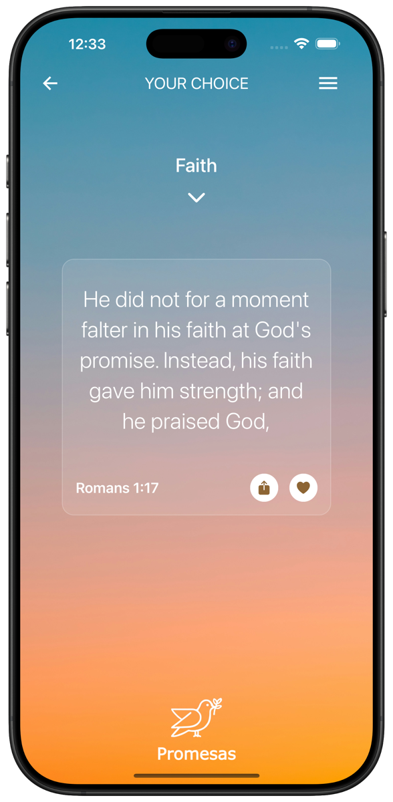
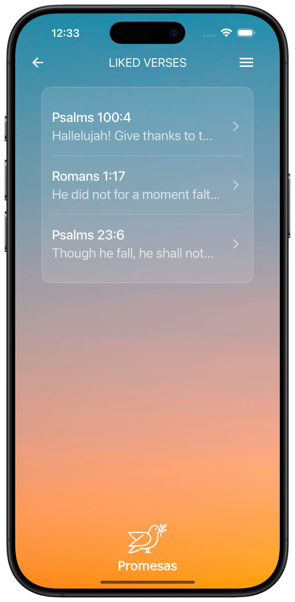
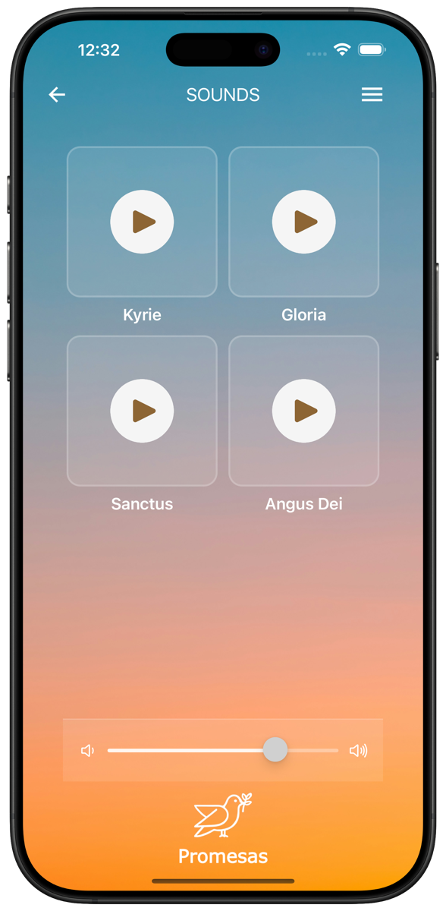
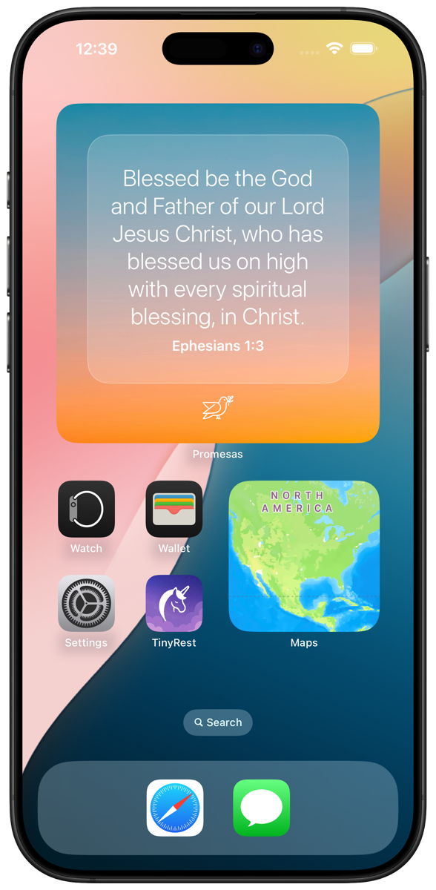
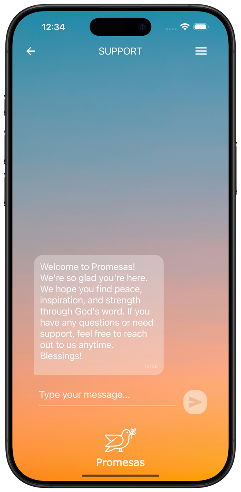

Curated by our team
Every time you open the app, the home screen greets you with a verse hand-picked by the Promesas staff.
Open the app to a verse hand-picked by our team, get promises chosen for your interests, or search by hope, strength or peace — and keep your favorites close.
Your favorites stay on your device


“You will keep in perfect peace those whose minds are steadfast, because they trust in you.”
“Be strong in the Lord and in his mighty power.”
“I can do all this through him who gives me strength.”
“The Lord is my shepherd, I lack nothing.”
“Cast all your anxiety on him because he cares for you.”
“Trust in the Lord with all your heart and lean not on your own understanding.”
Every time you open the app, the home screen greets you with a verse hand-picked by the Promesas staff.
Tell us what you care about and “For You” brings verses chosen around your interests.
Browse promises by category — faith, encouragement, peace, anxiety and more.
Your favorites and preferences are stored on your device, not on our servers.


Pick a category and Promesas brings you verses that speak to it. Need encouragement? Want to grow in faith? Switch topics in a tap and keep reading.
Select the interests that matter to you and “For You” picks verses based on them — a feed of promises customized for you, not for everyone.

Tap the heart on any verse to save it. All your liked verses live in one list, ready to revisit whenever you need them.

Quiet your mind with sacred chants — Kyrie, Gloria, Sanctus and Agnus Dei. Play one while you pray, read or wind down for the night.

Add the Promesas widget and see a verse every time you pick up your phone — no need to open the app.

Have a question or need a hand? Send us a message right from the app and our team will get back to you.
Whatever you're carrying today, there's a word for it.
Promesas is an iOS app that helps you find Bible promises for the moment you're in. Start with a verse curated by our team, get verses chosen for your interests, browse by category, listen to sacred chants and save the verses that speak to you.
Open “Your Choice”, pick a category like hope, strength, peace or anxiety, and Promesas will show you verses for it.
Yes. Tap the heart on any verse and it's added to your Liked Verses, ready to revisit anytime.
Select the interests that matter to you and “For You” chooses verses based on them, so what you see is customized for you.
Yes. Add the Promesas widget to your iPhone home screen to see a verse at a glance.
Your favorites and preferences are stored locally on your device and aren't sent to our servers. Read the full Privacy Policy.
Open Support in the app and send us a message. Our team will reply right there.
Promesas is available for iPhone on the Apple App Store.